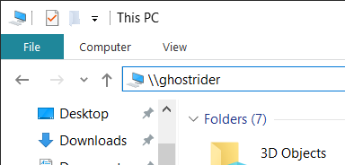
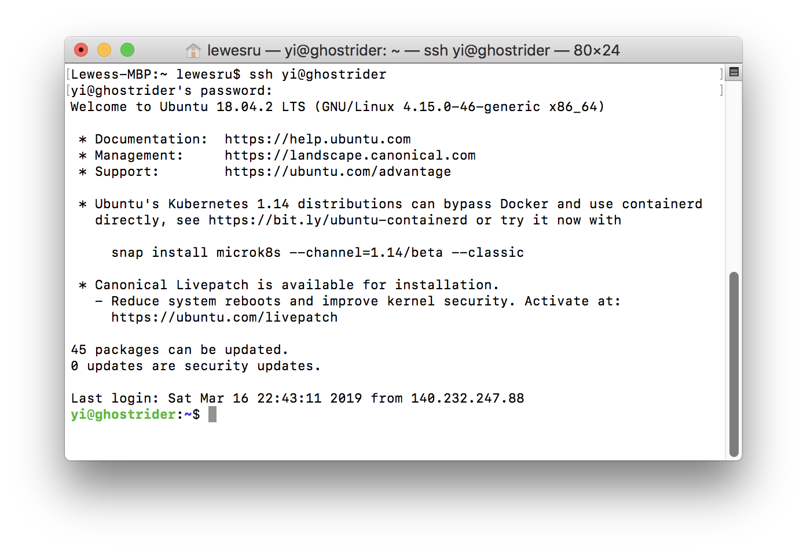

Lambda workstation (ghostrider) provides an efficient and high-performance solution for running deep learning code. It is also provides a Remote Desktop Protocol (RDP) for an easy-to-use remote access. However, using RDP will consume many CPU/GPU and RAM resources on ghostrider. Besides, if your connection with ghostrider is via Clark VPN, the response from ghostrider sometimes will be very “laggy” or even have no response at all. So, using Secure Shell (ssh) could be an ideal way to access ghostrider remotely. ssh can let you control the machine not only save computing resources, but also avoid the “laggy” situations.
ssh is a secure connection to server’s shell. It provides a command line control interface (the shell) to the server (i.e. ghostrider). There is no GUI at all, only command lines. And that’s the reason why using SSH can save our valuable computing resources.
This manual will guide you through the SSH access installation with only a few steps. After setting everything up, you can use Jupyter Notebook on your own device, but running your code on ghostrider. (Even if Jupyter Notebook is not installed on your device!)
Now let’s get started.
Installation
Step 1: Client Side
The first step is add ghostrider to your hostname list on your computer. This operation is requiring administrator access or sudo permission. However, you can skip this step if you prefer using IP address to connect, or you don’t have the permission to modify system file.
The configuration file is saved on ghostrider: /home/share folder. All the operations require your device to be connected to the Clark network. (i.e., connected to Clark WiFi or Clark VPN)
For Windows:
Open a File Explorer, type \\140.232.230.73 in the address bar, press Enter.

A window will pop-up asking for your credentials. Now type your username and password on ghostrider.
You will see a Folder name home on Lambda, open it and navigate to share folder.
Open Windows folder in share, right click on setup.bat and select Run as administrator. Click Yes when UAC window prompt.
If the script finished without Access is denied., then it means that ghostrider was added to your hostname list.
For Mac:
Open a Finder window, press ⌘ + K and type smb://140.232.230.73 in Server Address.
Then type in your credentials for ghostrider. If it prompts you to select volumes, selecthome on Lambda and click OK.
Navigate to home on Lambda/share/Mac&Linux, and you will see a executable file named setup.
Open a terminal window, type insudo (’sudo’ and a space), then drag the setup file into the terminal, then it will show up like this:
Hit return, when it prompts you for password, type the password you used to login your Mac. Noted that your password will NOT show up as *** here, keep typing then press return.
If the script finished without Permission denied, then it means that ghostrider was added to your hostname list.
Step 2: Server Side
Now the ghostrider is added to your hosts list, we can connect it with its hostname through ssh. (If you have skipped Step 1, use 140.232.230.73 instead of ghostrider below.) Currently both Windows and Mac are shipped with ssh function. Most of the Linux distributions will also have ssh pre-installed.
For Windows users, please use either Command Prompt or Windows PowerShell to connect ghostrider. (Personally I prefer PowerShell)
For Mac and GUI Linux users, please use the Terminal.
I will use macOS screenshot to illustrate, all the commands are the same on all OS.
Connect to ghostrider
After opening your Terminal/PowerShell, type:
ssh<username>@ghostrider
Change <username> to your username on ghostrider, then press enter.
When it is the first time you connect to ghostrider, it will prompt:
The authenticity of host 'ghostrider (140.232.230.73)' can't be established.
ECDSA key fingerprint is SHA256:A-very-long-string-and-totally-nonsense.
Are you sure you want to continue connecting (yes/no)? yes
Please Type yes and press enter.
Then you will be asked for password, type in your password for accessing ghostrider.
Now, you are logged into ghostrider via ssh. Your terminal will look very similar to this:

Don’t close this window, we will proceed to the next step.
Setup Jupyter Notebook for remote access
Now type the following command to run the Jupyter configuration file:
cd~/../share
python3 ./run.pyc
Please follow the instructions to go through the setup. You will be asked to select a port number. When finished, your Jupyter Notebook should be all set.
Now you can type jupyter notebook in your Terminal to start it. Then open your favorite web browser, open http://ghostrider:your port #, ignore the password prompt (the script has set it up for you) and click Login, and you are all set!
Extra: share drive on ghostrider
You might notice that the ghostrider has a share drive function just like how you access \\sandy. And yes, after this setup you can access it or map this network drive to your computer simply with \\ghostrider or \\ghostrider\home on Lambda. (For Mac and Linux is smb://ghostrider, smb://ghostrider/home on Lambda)
Noted that you will have permission to Read & Write ONLY to your own folder and share folder. You can read others folder but you don’t have permission to write.